The Junior Bobsled program has ended for another season. Congratulations to Sarah Hart and Ryan Sweeney from the Whitehall Bobsled Club for taking first place for Junior Bobsled in the Empire State Winter Games. Bryan Berghorn and Dennis Lautenscwetz, of Lake Placid, took silver and Jacob Miller, from Cropseyville, and David Fox, of Troy, won the bronze.
Here are some pics of the final awards for Sunday's group of athletes. Sarah and Ryan won gold again, Andrew LeBlanc and Jeremiah Gillette took silver and Chris Lawless (our Grandson) and Ezra Gillette won bronze. Congratulations to all who participated in the Friday and Sunday groups and we'll be looking forward to seeing you next season as you work your way towards a future Olympics.
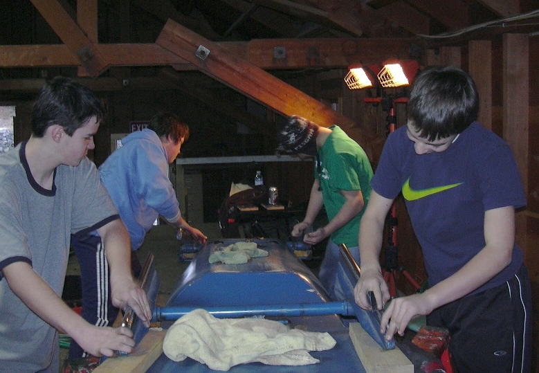
Chris Lawless, Sean Ryan, Ezra Gillete and Forrest Morgan work on their sled
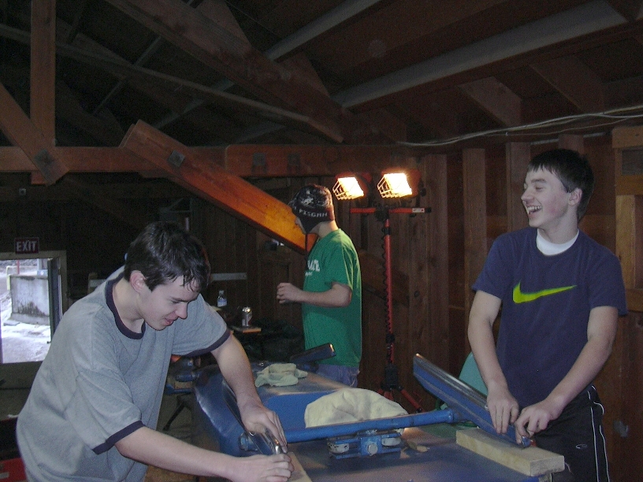
Chris, Ezra and Forrest polishing runners.
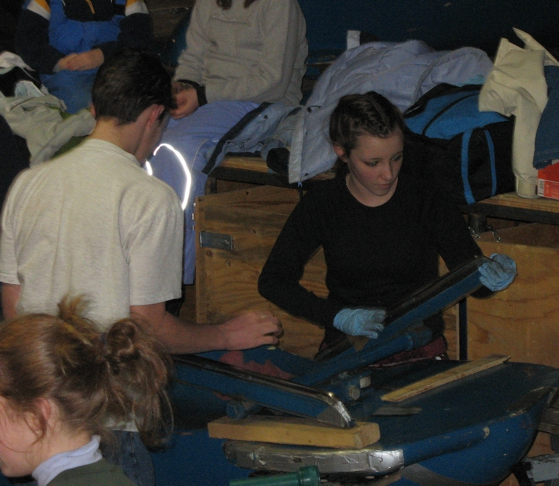
Chris Lawless and Sarah Hart hard at work
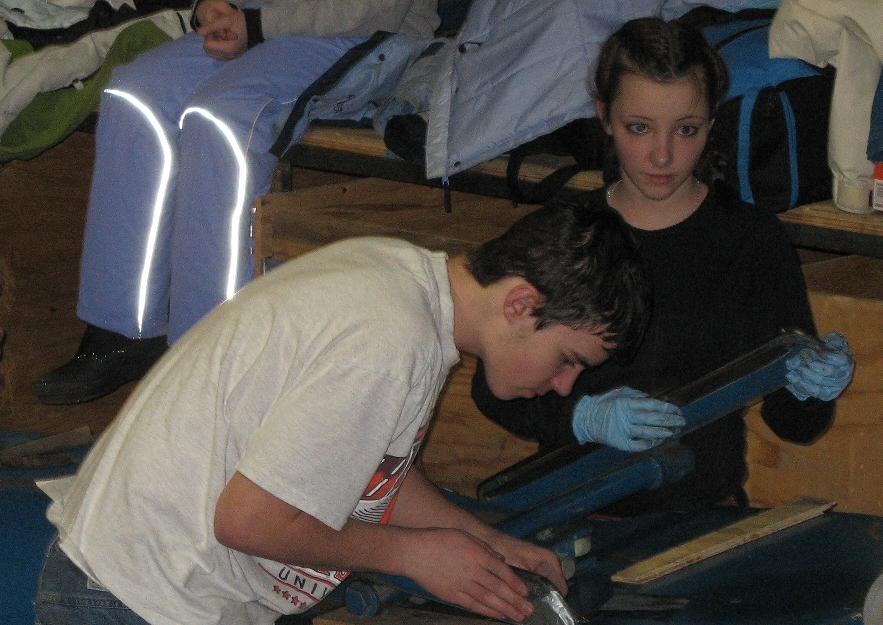
Chris and Sarah still working
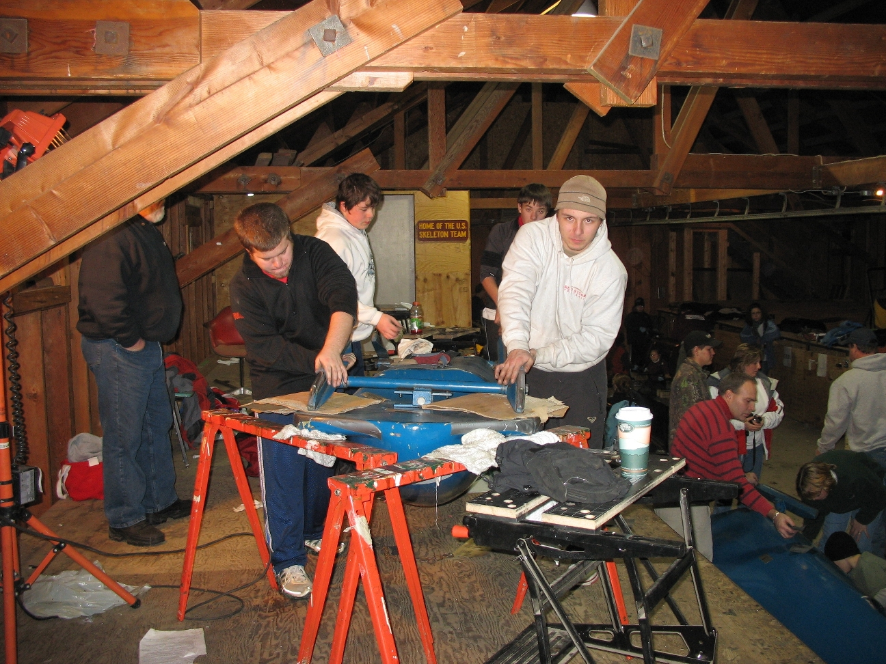
Andrew LeBlanc, Sean Ryan, Forrest Morgan and Jeremiah Gillette.(Gary Ryan hiding behind beam)
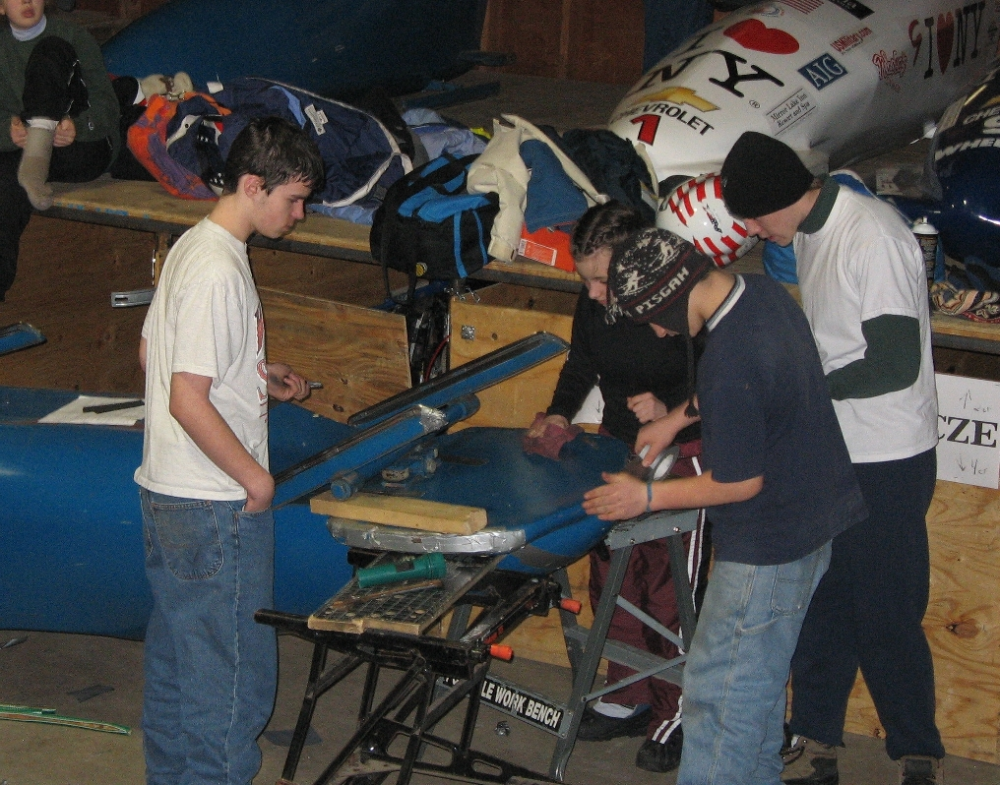
Chris, Sarah, Ezra and Ryan Sweeney still polishing those runners
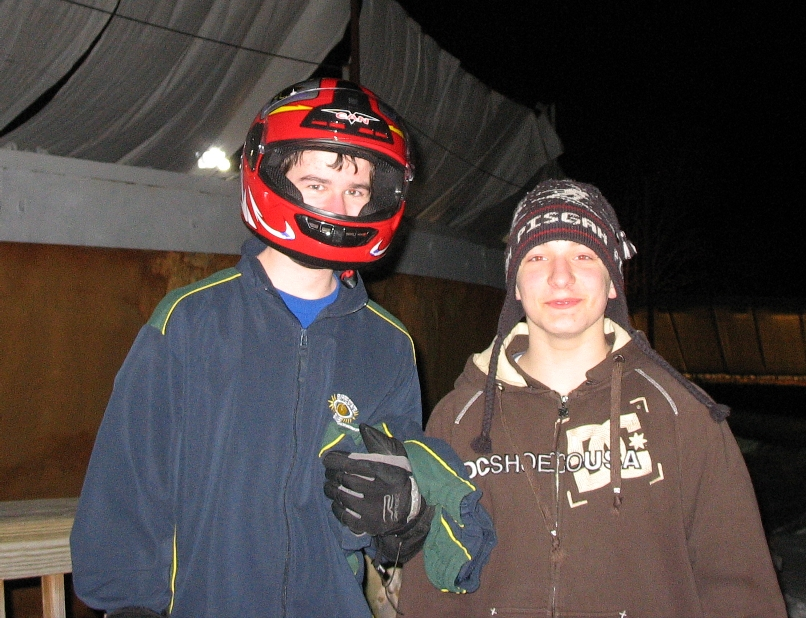
Chris and Ezra ready to run
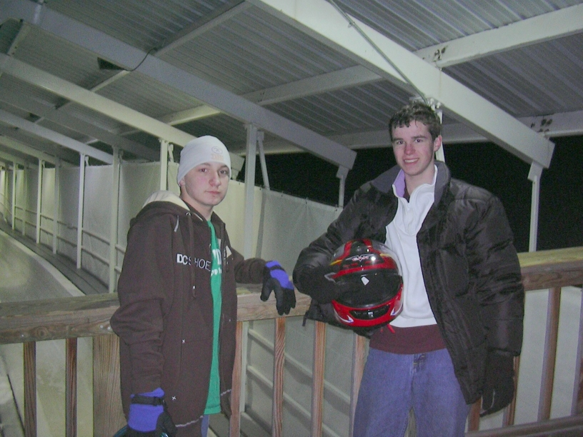
Chris and Ezra take a break
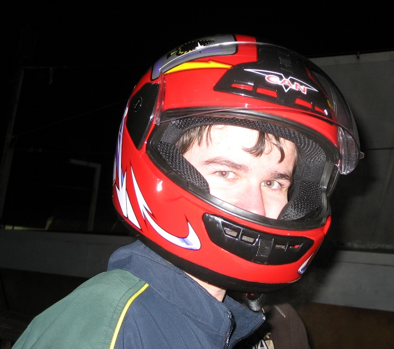
Chris (smiling?)
Grand Opening Ceremony of Empire State Winter Games
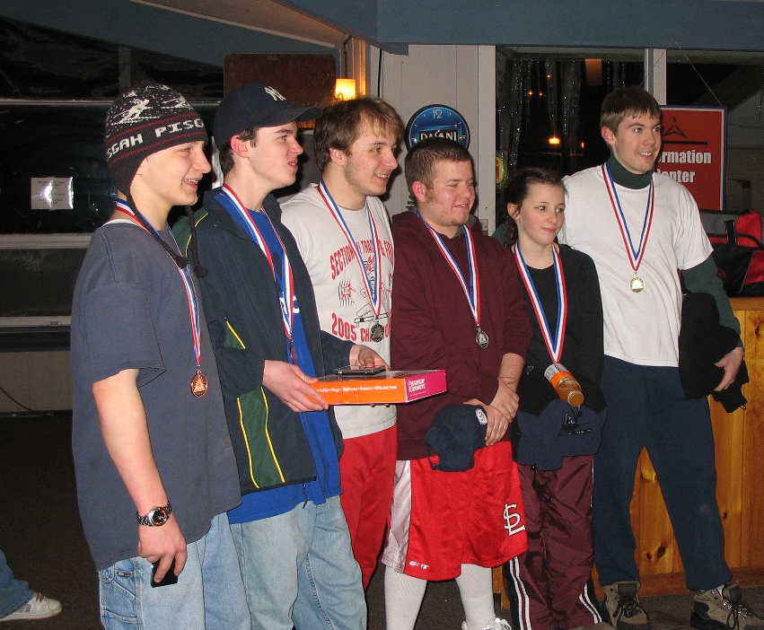
Ezra, Chris, Jeremiah, Andrew, Sarah and Ryan. Chris protects the donuts.
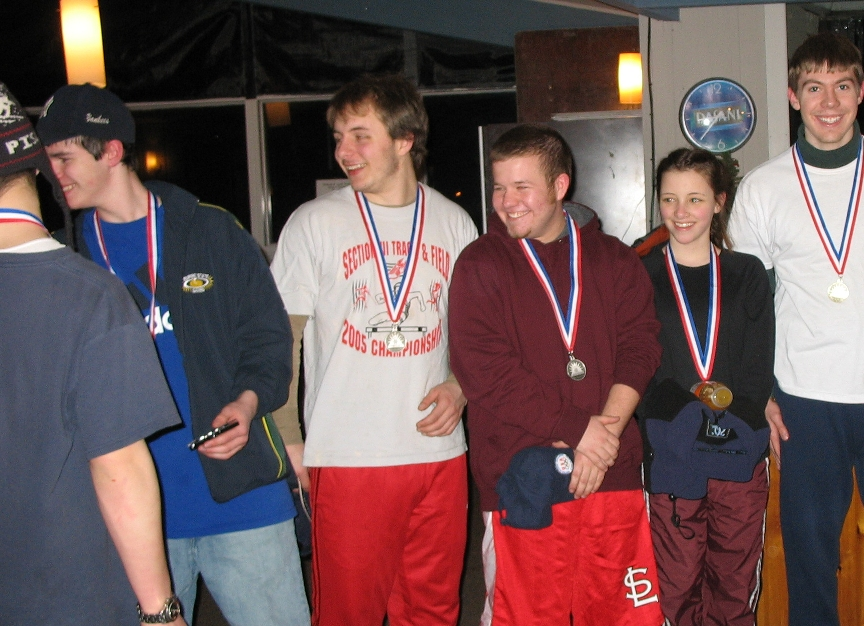
The gang laughs as Chris grudgingly gives up the donuts.
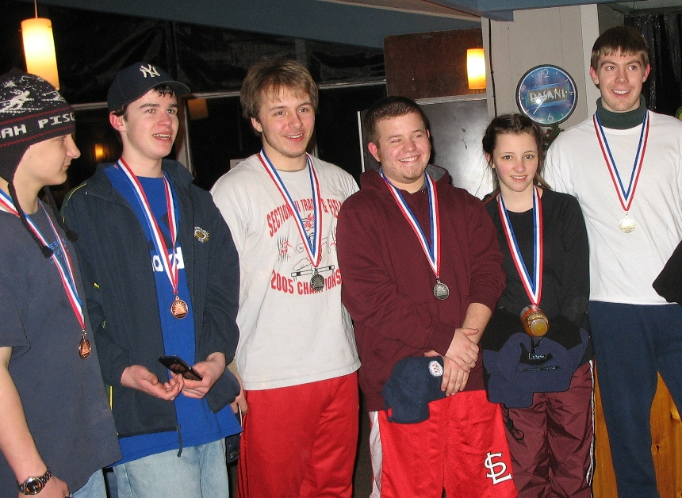
The gang poses for shots.
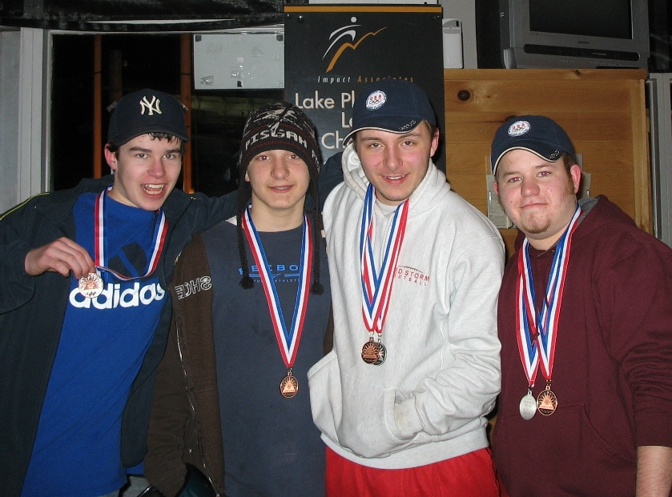
Chris, Ezra, Jeremiah and Andrew show off medals.
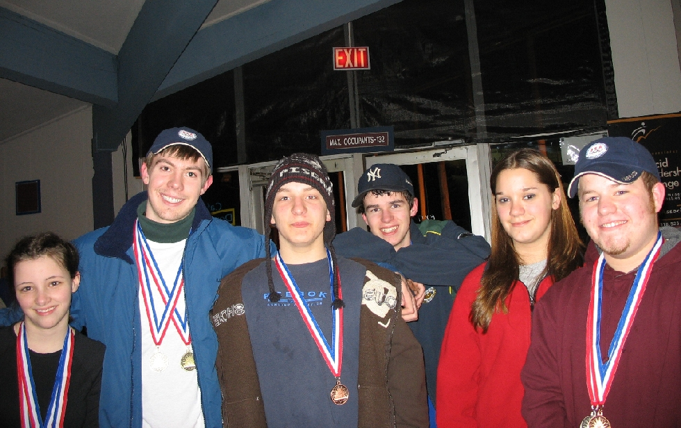
The gang poses for more shots.